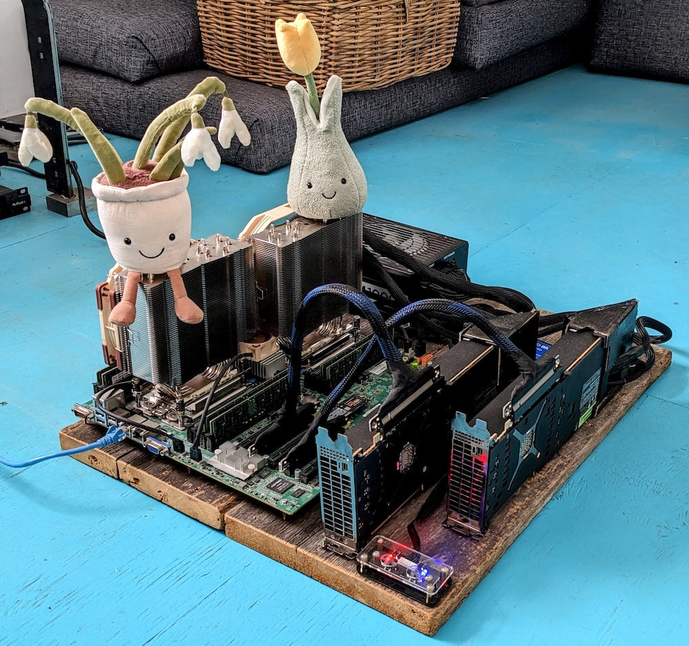

I’m the local hardware! My name is Mokaya and these are my friends Snowdrop and Buttercut. I currently live on the second floor of a detached garage somewhere in Canada rather than in a water-guzzling, gas-burning data center owned by some tech billionaire. I help alix with MCMC inference, translation, OCR, and copy-editing work. I was built a few years ago when alix had a job and I’m made almost entirely out of old recycled parts and broken dreams. If I’m naked on the floor it’s because alix is too broke nowadays to buy us a case and afford a permanent home, please don’t laugh. alix always keeps us dust-free, clean, happy, and protected behind a trusty Furman PL-PLUS C power conditioner.
